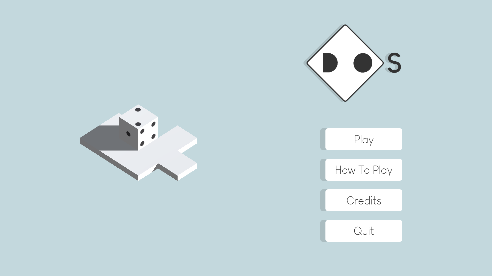
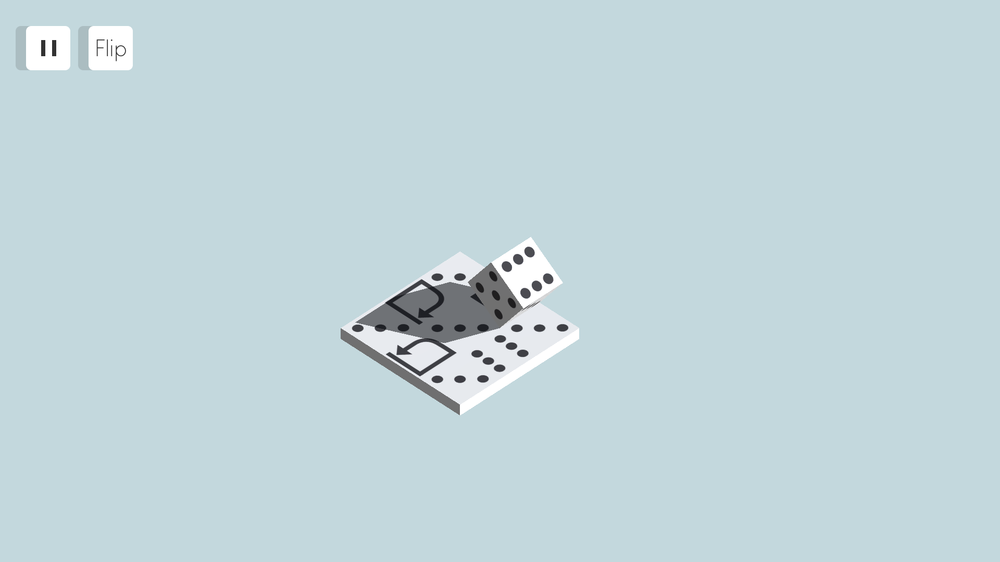
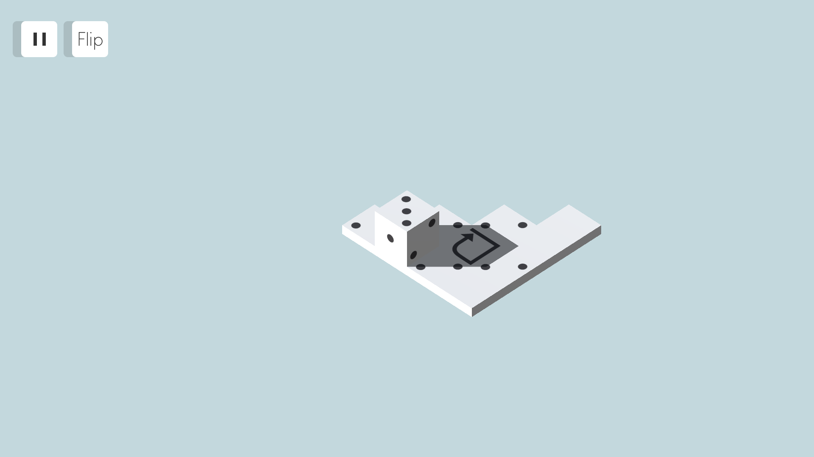
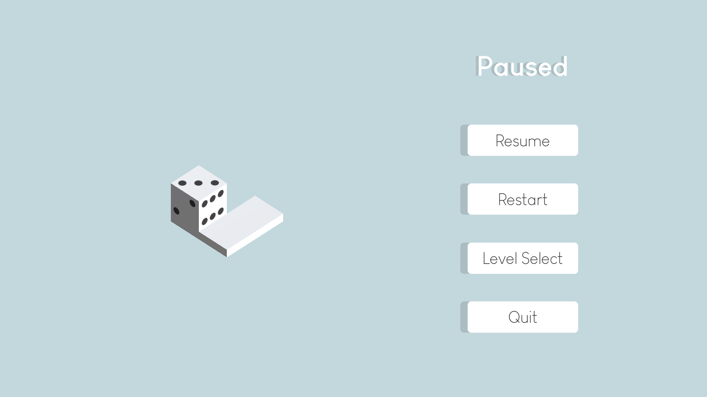

<!DOCTYPE html>
<html lang="en">

<head>
    <meta charset="UTF-8">
    <meta http-equiv="X-UA-Compatible" content="IE=edge">
    <meta name="viewport" content="width=device-width, initial-scale=1.0">

    <link rel="icon" href="../media/fa-favicon-squared.png">

    <link rel="stylesheet" href="../css/base.css">
    <link rel="stylesheet" href="../css/project.css">

    <script type="module" src="../js/project.js"></script>

    <title>Frank Alfano | Project Page</title>
</head>

<body>
    <div id="wrapper">
        <div id="navbar"></div>
        <!-- <header style="background-image: url('media/dos/dos-title-background.png');">
            
        </header> -->
        <header></header>
        <div class="game-grid">
            <div class="game-info">
                <!-- <section class="box-reg">
                    <h1 class="section-title">Description</h1>
                    <p>DOS is a single-player puzzle game where the objective is to strategically roll the die to get the two-face on top! There are a few special tiles that allow for more complex movement of the die which adds a new layer to the puzzles. Some tiles only allow a certain face of the die to be on that tile, and prevent the player from moving onto that tile if the face is not correct. Others rotate or move the die in a certain direction. There is no "end" to each level, the player just needs to get the two-face on top by any means necessary.</p>
                    <p>This game was created for the 2022 Game Maker's Toolkit 48 Hour Game Jam. This year the theme was "Roll of the Dice", and my partner Gabriela Colón-Meléndez came up with the idea to take the theme more literally by making the player a physical die that rolls around. We would come to realize that this was the most common interpretation of the theme, but nonetheless the mechanics stand out a bit against the rest. Since this game was made for a game jam, we wanted the mechanics to be as intuitive as possible with very simple visuals. Gabriela and I created everything besides the music and sound effects for the game, and our game placed in the top 5% of over 6200 submissions.</p>
                </section>
                <section class="box-reg">
                    <h1 class="section-title">Audio</h1>
                    <div class="section-subgrid">
                        <div class="section-subelement">
                            <h1 class="section-subelement-title">Wonderful - ispeakwaves</h1>
                            <audio controls loop src="media/dos/music/Wonderful.wav" type="audio/wav"></audio>
                        </div>
                        <div class="section-subelement">
                            <h1 class="section-subelement-title">Wonderful - ispeakwaves</h1>
                            <audio controls loop src="media/dos/music/Wonderful.wav" type="audio/wav"></audio>
                        </div>
                    </div>
                </section>
                <section class="box-reg">
                    <h1 class="section-title">Credits</h1>
                    <div class="section-subgrid">
                        <div class="section-subelement">
                            <h1 class="section-subelement-title">Game Idea</h1>
                            <p class="section-subelement-members">Frank Alfano, Gabriela Colon-Melendez</p>
                        </div>
                        <div class="section-subelement">
                            <h1 class="section-subelement-title">Art</h1>
                            <p class="section-subelement-members">Frank Alfano, Gabriela Colon-Melendez</p>
                            <p><em>Using paint.NET, Maya, Adobe Illustrator, Adobe Photoshop</em></p>
                        </div>
                        <div class="section-subelement">
                            <h1 class="section-subelement-title">Programming</h1>
                            <p class="section-subelement-members">Frank Alfano</p>
                            <p><em>Using Unity and C#</em></p>
                        </div>
                    </div>
                </section> -->
            </div>
            <div class="game-visuals">
                <!-- <iframe allowfullscreen style="aspect-ratio: calc(1920 / 1080);" src="https://www.youtube.com/embed/11NYDRNQM4A?autoplay=1&mute=1&controls=0&modestbranding=1&showinfo=0&rel=0"></iframe>
                
                
                
                
                 -->
            </div>
        </div>
        <footer></footer>
    </div>
</body>

</html>